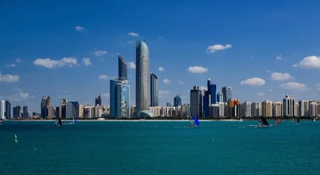
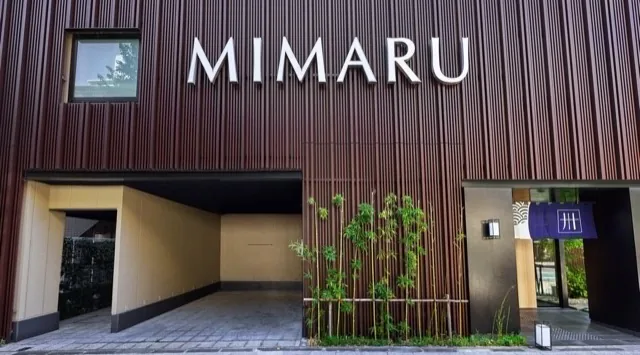
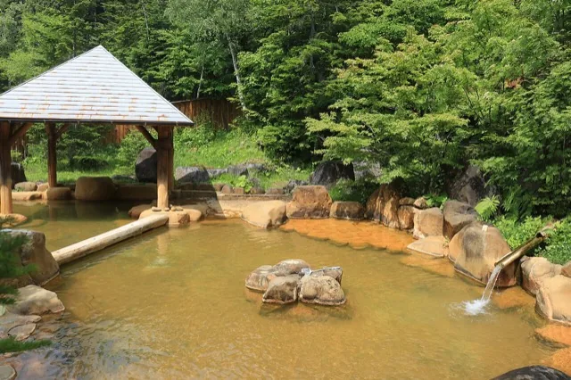
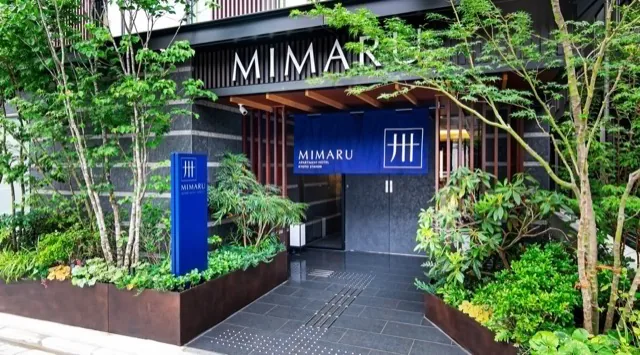
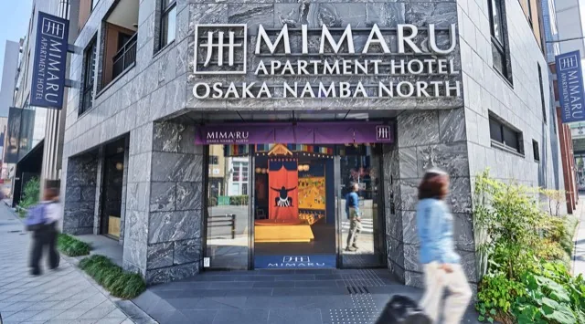
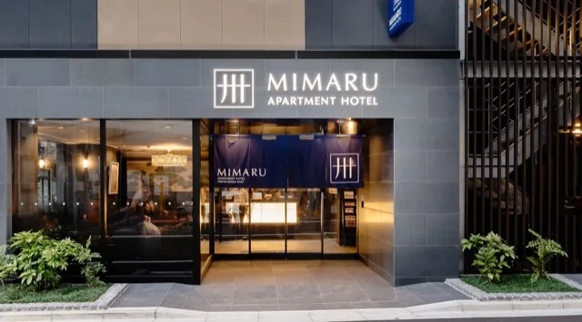

Noclegi · 10 nocy w Japonii + gratis Abu Zabi · pokoje rodzinne 4-os.
Hotele
Pięć baz w Japonii pod rodzinę 2+2 (aparthotele MIMARU i ryokan z onsenem) plus darmowa noc stopover w Abu Zabi od Etihadu. Kliknij zdjęcie hotelu, aby otworzyć jego lokalizację w Google Maps.
Hotel stopover w Abu Zabi
Hotel 4★ w cenie biletu Etihad (program stopover, także w ekonomii). Konkretny obiekt wybiera się z listy Etihadu przy rezerwacji pakietu — najpóźniej 3 dni przed wylotem, najlepiej od razu po kupnie biletów. Tego jednego noclegu NIE rezerwujcie przez Booking — poza pakietem Etihad trzeba by za niego zapłacić. Uwaga: bezpłatność programu jest potwierdzona formalnie do stycznia 2027, więc na maj 2027 potwierdźcie ją przy zakupie biletu.

📍 Etihad Stopover →MIMARU Tokyo Ueno EAST
Aparthotel projektowany pod rodziny: apartament dla 4 osób z aneksem kuchennym i osobną sypialnią. Spokojna okolica Ueno, ~10 min metrem do Asakusy, wygodny start po przylocie.

📍 Zobacz w Google Maps →Hakone Kowakien Ten-yu
Wyższa półka na jedyną noc, gdy nocleg JEST atrakcją: nowoczesny luksusowy ryokan, w którym KAŻDY pokój ma prywatną odkrytą kąpiel onsen (rotenburo) na tarasie — kąpiel o dowolnej porze, bez wspólnych łaźni. Dla 2+2 bierzcie pokój typu „Maisonette" (do 4 osób). Wielodaniowe kaiseki, przyjazny rodzinom, w rejonie Ninotairy/Gōry. WAŻNE: 7.05 to piątek, a pokoi 4-osobowych jest mało — rezerwujcie od razu, gdy tylko otworzą się terminy (na maj 2027 mogą jeszcze nie być dostępne — patrz „Kalendarz przygotowań"). Alternatywy dla 4 osób z prywatnym rotenburo: Hakone Kowakien Mikawaya (typy willowe) lub Ajisai Onsen Ryokan (pokoje rodzinne, darmowe anulowanie na Booking). Zdjęcie: przykładowy rotenburo.

📍 Zobacz w Google Maps →MIMARU Kyoto STATION
Ta sama rodzinna formuła co w Tokio, tuż przy dworcu Kioto — idealna baza wypadowa na Narę (Kintetsu) i Arashiyamę (JR), a walizki z takkyūbin czekają w recepcji.

📍 Zobacz w Google Maps →MIMARU Osaka NAMBA North
Apartamenty rodzinne w sercu Namby — ~8 minut spacerem od neonów Dōtonbori i 10 od targu Kuromon. Wieczorne wyjścia na street food bez logistyki.

📍 Zobacz w Google Maps →MIMARU Tokyo GINZA EAST
Nocleg na finał: spokojna wschodnia Ginza, prosto metrem na Ryōgoku (sumo) i rzut kamieniem od Tokyo Station, skąd rano odjeżdża Narita Express. Alternatywa przy samej hali: APA Ryōgoku Eki Tower (ale pokoje 2-os. — trzeba brać dwa).

📍 Zobacz w Google Maps →Mapa baz w Japonii
- 1 MIMARU Tokyo Ueno EAST · Tokio (start)
- 2 Hakone Kowakien Ten-yu · Hakone
- 3 MIMARU Kyoto Station · Kioto
- 4 MIMARU Osaka Namba North · Osaka
- 5 MIMARU Tokyo Ginza EAST · Tokio (finał)
- Rezerwujcie wrzesień–październik 2026 z darmowym anulowaniem (Booking/strony hoteli) — pokoje 4-osobowe znikają pierwsze, a początek maja łapie ogon Golden Week.
- Ryokan w Hakone (wyższa półka): wybierzcie pokój z prywatnym rotenburo i potwierdźcie kaiseki + japońskie śniadanie w cenie.
- Ceny to widełki orientacyjne za pokój/apartament dla 4 osób; suma 10 płatnych nocy ≈ 8–10 tys. zł (w kalkulatorze liczymy 10 × 820 zł; noc w Abu Zabi gratis).
- Pakiet stopover (hotel w Abu Zabi) rezerwujcie na etihad.com od razu po kupnie biletów — popularne terminy znikają, a promocję trzeba potwierdzić dla maja 2027.
- Adresy dla taksówkarza najlepiej pokazywać z Google Maps po japońsku — kliknięcie zdjęcia hotelu otwiera właściwe miejsce od razu.